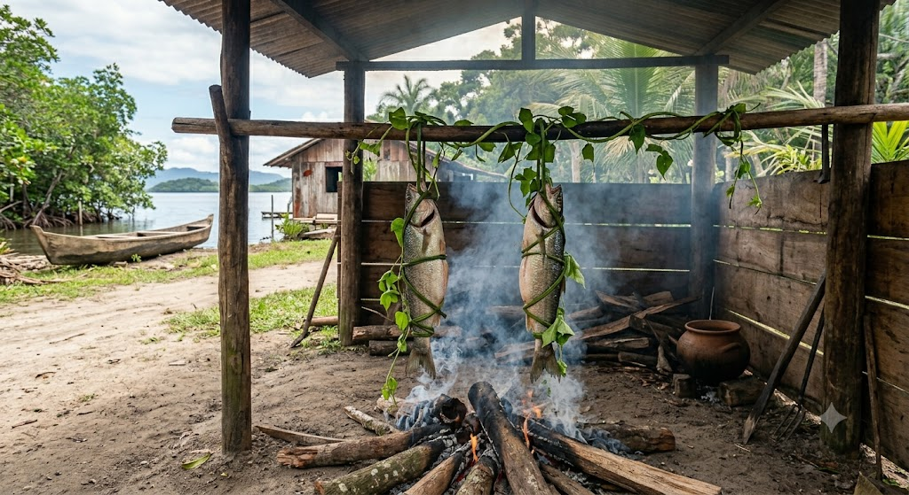

A biodiversidade e a sabedoria caiçara como fontes de sustentabilidade e renda alternativa nos Polos de Piaçaguera e Amparo.
Nas ilhas de Piaçaguera e Amparo, o ecossistema estuarino e a pesca artesanal sustentam famílias há gerações. Porém, quando a temporada de pesca está baixa ou durante os períodos de defeso ecológico, a vulnerabilidade social aumenta.
Este portal busca ser uma ferramenta viva para as comunidades locais e visitantes, demonstrando que o conhecimento caiçara é capaz de gerar renda inovadora, transformando produtos simples em experiências de alto valor ecológico e gastronômico.
Comunitário e Ecológico
Focos do Agrinho
Veja como uma atividade extra pode diversificar a economia de uma família na ilha durante o defeso:
*Valores baseados em médias sugeridas por cooperativas caiçaras locais.
Aprenda a técnica ancestral de defumação que conserva o peixe e cria um produto de alto valor para venda.

A sustentabilidade protege a biodiversidade. Clique nos meses para descobrir o status da pesca local e quais alternativas de renda estão ativas!
Período favorável para espécies costeiras de calor. Boa circulação de correntes na Baía.
Excelente fluxo de turismo nas ilhas. Ótima oportunidade para oferecer as Oficinas Gastronômicas de Cambira.
Como os estudantes dos polos Piaçaguera e Amparo estão conectando os conteúdos escolares com o desenvolvimento sustentável da comunidade.
Valorização curricular de Piaçaguera e Amparo. O saber dos mais velhos vira material de estudo nas aulas de ciências, história e geografia.
Fomento à criação de roteiros integrados de turismo comunitário. Estudantes atuando como jovens monitores do ecossistema e herança caiçara.
Uso de tecnologias de programação e web leves, permitindo a comunicação rápida das ilhas com o público exterior mesmo com baixa conectividade.